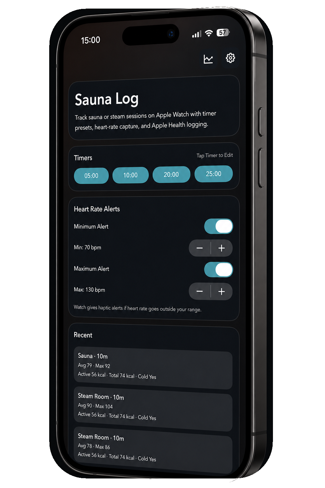

Sauna or steam, your choice.
Choose the heat type, pick one of four remembered timer defaults, and slide to start. Add more time at the end using any of your defaults.
Sauna Log gives you a calm, reliable way to track sauna and steam room sessions without turning the experience into a data project.
Manage timer defaults and heart-rate alerts on iPhone, then let the Watch handle the session.

Choose the heat type, pick one of four remembered timer defaults, and slide to start. Add more time at the end using any of your defaults.
See heart rate while you are in the heat. Personal guidance compares your response with the start of the session and recent same-type sessions.
Keep an eye on active and total calories during the session, then see them alongside the saved record on iPhone.
Enter temperature and humidity on the Watch when you want to. Choose Celsius or Fahrenheit in the iPhone app, with separate sauna and steam room defaults remembered for repeat visits.
The app is available in English, German, Finnish, Swedish, Japanese, Norwegian, Danish and Dutch.
With your permission, Sauna Log writes eligible workout and heart-rate data through HealthKit. The selected heat type is stored in Sauna Log metadata; Apple may display the workout under its generic category.
Review heat per active day, duration trends, sauna and steam mix, heart rate and heat load across week, month and year views.
Haptics, background timing, optional heart-rate alerts and delayed sync help Sauna Log stay useful while your phone is out of reach.